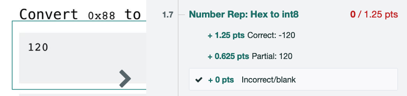

Exam Policies
Exam Times
- Midterm 1 is Thursday, September 25, 8–10pm PT.
- Midterm 2 is Thursday, November 6, 8–10pm PT.
- The final exam is on Thursday, December 18, 8–11am PT.
(Source for final exam: Registrar website.)
Exams are in-person only, so if you are enrolling in the class, you should plan on being physically present on campus for the midterm and final exam dates.
Alternate Exam Times
If you are unable to take the exam at the scheduled time, we will be offering only one alternate exam time per exam, in-person only, immediately after the scheduled exam.
- Alternate Midterm 1 time: Thursday, September 25, 6–8pm.
- Alternate Midterm 2 time: Thursday, November 6, 6–8pm.
- Alternate final exam time: Thursday, December 18, 11am–2pm (you’ll have some time to walk between exams and take a quick break).
(Note: The alternate midterm times used to say 10pm–12am, but we changed them to be earlier. If the earlier time doesn’t work for you, please fill out the exam alterations form to let us know.)
There are no other alternate exam times. You cannot take the exam on other days, and you cannot take the exam earlier than the listed time. If you plan on enrolling, you should make sure you can attend the exam times.
(If you have a verified DSP accommodation, we will work with you to find an exam time that meets your accommodations. If you are not registered with DSP, the paragraph above applies.)
We are only offering the alternate exam time if you are unable to take the exam at the normal time. For example, if you have another exam at the same time, you can take the alternate-time exam. However, wanting a break between non-conflicting exams would not be a valid reason to take the alternate-time exam, because in this case you are able to take the exam at the normal time.
We’ll release a form closer to the exams for you to sign up for an alternate-time exam.
If you are unable to attend the normal exam or the alternate-time exam (e.g. because of sickness), please email cs61b@berkeley.edu.
Exam Clobbering
For those of you who miss an exam, have a bad night, or make major improvements over the semester, the exam clobbering policy gives you a chance to replace one or both of your midterm exam scores.
You don’t need to understand the math behind the clobber policy, but we’ve described the computation steps below for transparency:
Exam clobbering formulas. You do not need to understand anything in this box.
Compute your z-score on the final exam:
\[\text{final exam z-score} = \frac{(\text{your final exam score} \ – \ \text{final exam mean})}{\text{final exam standard deviation}}\]Compute the equivalent score on the midterm distribution:
\[\text{scaled midterm score} = (\text{final exam z-score} \times \text{midterm standard deviation}) + \text{midterm mean}\]Your midterm score is:
\[\max(\text{your midterm score}, \text{scaled midterm score})\]Repeat Steps 1–3 for both midterms.
Exam Scaling
Each exam is scored out of 100 points, but we will scale your score up to be out of 150 (midterm 1), 250 (midterm 2), and 400 (final exam) course points when we compute your final letter grade.
Regrade Request Policy
If you think we made a mistake when grading your exam, you can request a regrade through Gradescope.
You should only request a regrade if there is a rubric item that clearly applies to your answer. For example:

In this case, your answer is eligible for the “Partial: 120” rubric item, so you can request a regrade request.
However, if you answered “–121”, this is not on the rubric. If you request a regrade asking for partial credit, it will be denied.
If you want to ask for credit for something that’s not on the rubric, you should ask publicly on Ed. A good rule of thumb is: If regrading your answer would change the rubric for everybody else, you should post on Ed.
Note on partial credit: To minimize the effect of random guessing on exam scores, we are stricter than other classes when it comes to partial credit:
- An answer that is fully correct except for one very minor mistake is usually worth half-credit.
- An answer with 2 or more minor mistakes is usually not worth credit.
- An answer showing conceptual misunderstanding is usually not worth credit. Similarly, an answer where we cannot distinguish between a conceptual misunderstanding and a typo is usually not worth credit.
Asking for more partial credit is not going to be very helpful. Remember, we curve the exam to a target average of 65%, so when we hand out less partial credit, it also means you get more of a grade bump from the curve. If we gave more partial credit, the curve would end up being less generous, and your overall grade wouldn’t be much different.
Some other logistical policies on regrade requests:
- We only respond to regrade requests after the deadline for submitting them.
- If we spot another mistake in the process of regrading your submission, we will fix it, even if your grade goes down. Please request responsibly! If you flood us with frivolous requests or requests that don’t follow the rules (e.g. “can I have partial credit for this thing that’s not on the rubric”), we’re more likely to find something else and decrease your score.